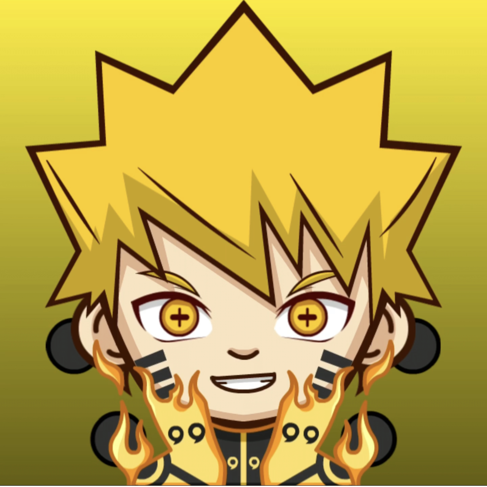

Naruto Uzumaki (うずまきナルト, Uzumaki Naruto) is a Ninja from Konohagakure. He became the jinchūriki of the Nine-Tails on the day of his birth — a fate that caused him to be shunned by most of Konoha throughout his childhood. After joining Team Kakashi, Naruto worked hard to gain the village's acknowledgment all the while chasing his dream to become Hokage. In the following years, through many hardships and ordeals, he became a capable ninja regarded as a hero both by the villagers, and soon after, the rest of the world, becoming known as the Hero of the Hidden Leaf

naruto
Konohagakure no Eiyū, Literally meaning: Hero of the Hidden Tree Leaves). He soon proved to be one of the main factors in winning the Fourth Shinobi World War, leading him to achieve his dream and become the village's Seventh Hokage (七代目火影, Nanadaime Hokage, lit. Seventh Fire Shadow).